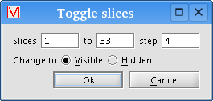

The portion of display window controls labeled "Data" encompasses controls related to the data objects themselves and how they are displayed.
The list on the left shows all data objects currently linked to the display.
Clicking a data object selects it, so that its characteristics can be
configured with the controls to the right.
The "Remove" button eliminates the selectted data object from the list, unlinking it from the display. This option does not remove the data object from the list on the main Data panel, but simply stops visualizing the object in the display.
The "Edit" button shows controls for manipulating the parameters of the selected data object. For datasets, it displays metadata associated within each file on disk. The button is grayed out when no controls or information are available.
The "Colors" button brings up a dialog box for adjusting the selected data object's color properties. For a full description, see the Colors dialog box topic.
The "Up" and "Down" buttons shift the selected data object up or down in the
list. This order is important because it defines the order in which objects are
drawn within the display. Some data may be drawn over top other data
undesirably if the list is not in the correct order.
The "Visible" checkbox toggles the visibility of the selected data object.
If you have many data objects within a single display, it can be useful to
temporarily hide some of them to get a better view of others.
First and foremost, the "Stack axis" dropdown box allows you to select which dimensional axis to use for the display's Z axis when stacking images. VisBio defaults to using a "Slice" dimension (focal planes) if one is present.
Next to the "Visible" checkbox is a "Toggle slices" button. Clicking it brings up a dialog box for controlling which stack slices are visible. This feature can be useful if your stack contains many slices that are closely packed visually. For example, you can toggle the data off by unchecking the "Visible" checkbox, then turn on every fourth slice with the "Toggle slices" dialog box as follows:

You can also toggle the visibility of individual slices in the stack with the "Current slice visible" checkbox.
The yellow box around the current slice can be toggled with the "Highlight
current slice" checkbox.
Lastly, the "Render as a volume" checkbox toggles VisBio's semi-transparent volume rendering mode for the selected data object. The box to the right of the checkbox controls the cubic resolution of the volume (the default value of 96 means the volume is a 96x96x96 cube).
Volume rendering uses a lot of memory, so be sure you have enough RAM, and that VisBio is configured to use it (see the Changing the memory limit topic for instructions). We recommend 1,024 MB of RAM for the default volume rendering settings (96x96x96), and 1,536 MB for maximum resolution (160x160x160).
To adjust the transparency settings of the rendering, click the "Colors"
button to bring up the Colors dialog box.